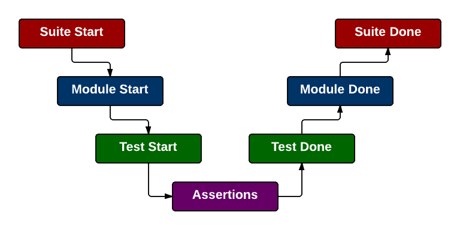

Browser Eyeballing !=
JavaScript Testing
Jordan Kasper

What are we talking about?
- Writing testable JavaScript code
- Using a testing framework
- Cross-browser testing
- Automation
Is this your testing process?
- Write some JavaScript code
- Check it in Chrome (looks great)
- Change something, breaking it in Chrome
- Spend 2 hours trying to figure out what you did
- Rinse, repeat
- Test in Internet Explorer..... crap.

There's a better way...
Writing Testable Code
Search Example
What's so bad about that?
Anonymous Functions

Does this look familiar?
Call Stack
(anonymous) some_file.min.js 3
(anonymous) some_file.min.js 3
(anonymous) some_file.min.js 3
(anonymous) some_file.min.js 3
DOM Coupling
Server Coupling
Refactor Until It Hurts
(and then refactor a little more)
Search Example - Redux
Now isn't that nice?
Call Stack
jk.handleResults some_file.min.js 3
successHandler some_file.min.js 3
jk.doSearch some_file.min.js 3
submitHandler some_file.min.js 3
jk.initSearch some_file.min.js 3
initPage some_file.html 376
Search Example - Initialization
Inline != Anonymous
Search Example - Redux
Search Example - Redux
Search Example - Redux

Testing Frameworks


Setting up QUnit
A Minimal Test File
A Minimal Test File
A Minimal Test File
A Minimal Test File
Writing Tests
Test Structure
In our app.js file...
In our tests.js file...
QUnit UI
QUnit UI - Failures

Various Assertions - OK
Various Assertions - (in)equality
Various Assertions - properties
Various Assertions - properties
Various Assertions - errors
Test Modules
QUnit UI - Modules
WRITE MOAR TESTS
MOAR TESTS
Testing Lifecycle
Testing Lifecycle
<!doctype html>
<html>
<head> ... </head>
<body>
...
<script src="lib/qunit-1.12.0.js"></script>
<script>
// QUnit options (via QUnit.config...)
QUnit.begin(function() {
// code to run before the suite begins
});
</script>
...
</body>
</html>
Testing Lifecycle
<script src="lib/qunit-1.12.0.js"></script>
<script>
// For the entire suite
QUnit.begin(function() { ... });
QUnit.done(function(failed, passed, total, runtime) { ... });
// For each module
QUnit.moduleStart(function(name) { ... });
QUnit.moduleDone(function(name, failed, passed, total) { ... });
// For each test
QUnit.testStart(function(name, moduleName) { ... });
QUnit.testDone(function(name, moduleName, failed, passed, total, duration) { ... });
</script>
Individual Module Lifecycle
module("These are tests for X");
module("These are tests for X", {
setup: function() {
// executed BEFORE each test in this module
},
teardown: function() {
// executed AFTER each test in this module (success or failure)
}
});
test("test X-one", function() { /* assertions */ });
test("test X-two", function() { /* assertions */ });
Asynchronous Tests
"But asynchronous tasks can't be tested in isolation..."
Asynchronous Tests
jk.doSearch = function( query, callback ) {
...
var xhr = $.ajax({
...
// call jk.handleResults() on success
});
...
};
Asynchronous Tests
jk.doSearch = function( query, callback ) {
...
var xhr = $.ajax({
...
// call jk.handleResults() on success
});
...
};
asyncTest("Search test", function() {
jk.doSearch("foobar", function(data) {
deepEqual(data, { "results": ["result one", "result two"] }, "Data is correct");
// other assertions
...
start(); // tell QUnit to keep going
});
});
Asynchronous Tests
asyncTest("Search test", function() {
expect(3); // test will fail if 3 assertions are not executed
jk.doSearch("foobar", function(data) {
deepEqual(data, { "results": ["result one", "result two"] }, "Data is correct");
// other assertions
...
start(); // tell QUnit to keep going
});
});
Asynchronous Tests
"But I don't want to rely on a server for client tests..."
Sinon | Mockjax | Jasmine-ajax
Cross Browser Testing
Automating Tests
Grunt

Installing Grunt

~/myproject$ npm install -g grunt-cli
Our project directory
- myproject
-
- src
-
- some-code.js
- tests
-
- lib
- test.html
- tests.js
Node Package File
- Describe the project
- Identify dependencies
- Specify execution commands
- Identify authors & licenses
- etc, etc, etc
Setting Up Your Project
// in ~/myproject/package.json
{
"name": "my-project",
"version": "0.0.1",
"devDependencies": {
"grunt": "~0.4.1"
}
}
~/myproject$ npm install
Our new project directory
- myproject
-
- node_modules
- src
-
- some-code.js
- tests
-
- lib
- test.html
- tests.js
- package.json
Setting Up Grunt
Gruntfile Structure
// in ~/myproject/Gruntfile.js
module.exports = function(grunt) {
// Task Configuration
grunt.initConfig({
pkg: grunt.file.readJSON("package.json"),
// TODO: define some tasks
});
// Register our tasks
grunt.registerTask("default", [ ]);
};
Grunt Tasks
~/myproject$ npm install grunt-contrib-qunit --save-dev
Modified package.json
// ~/myproject/package.json
{
"name": "my-project",
"version": "0.0.1",
"devDependencies": {
"grunt": "~0.4.1",
"grunt-contrib-qunit": "~0.2.1"
}
}
Grunt Tasks
module.exports = function(grunt) {
grunt.initConfig({
pkg: grunt.file.readJSON("package.json"),
qunit: { // task name
basic: { // target name
options: {
urls: [ "tests/core.html" ]
}
}
}
});
// Load the npm module
grunt.loadNpmTasks("grunt-contrib-qunit");
grunt.registerTask("default", [ "qunit" ]);
};
Grunt Tasks
module.exports = function(grunt) {
grunt.initConfig({
pkg: grunt.file.readJSON("package.json"),
qunit: { // task name
// target name & single option
basic: [ "tests/core.html" ]
}
});
// Load the npm module
grunt.loadNpmTasks("grunt-contrib-qunit");
grunt.registerTask("default", [ "qunit" ]);
};
But QUnit Tests run in a browser...


and

Running QUnit with Grunt
~/myproject$ grunt qunit:basic
~/myproject$ grunt qunit
Running "qunit:basic" (qunit) task
Testing tests/core.html .....OK
>> 12 assertions passed (21ms)
Done, without errors.
QUnit Errors
~/myproject$ grunt qunit:basic
Running "qunit:basic" (qunit) task
Testing tests/core.html ...F.
>> Some Module Name - Your Test Name
>> Message: The message you entered for this assertion
>> Actual: 0
>> Expected: 1
>> at file:///myproject/tests/lib/qunit-1.12.0.js:556
>> at file:///myproject/tests/tests.js:38
...
Warning: 1/12 assertions failed (21ms) Use --force to continue.
Aborted due to warnings.
Multiple Test Suites
module.exports = function(grunt) {
grunt.initConfig({
pkg: grunt.file.readJSON("package.json"),
qunit: {
basic: [ "tests/core.html" ], // first target
search: [ "tests/search.html" ] // second target
}
});
// Load the npm module
grunt.loadNpmTasks("grunt-contrib-qunit");
grunt.registerTask("default", [ "qunit" ]);
};
Multiple Test Files
module.exports = function(grunt) {
grunt.initConfig({
pkg: grunt.file.readJSON("package.json"),
qunit: {
basic: [ "tests/core.html" ],
search: [ "tests/search.html", "tests/search-results.html" ]
}
});
// Load the npm module
grunt.loadNpmTasks("grunt-contrib-qunit");
grunt.registerTask("default", [ "qunit" ]);
};
Wild Cards
module.exports = function(grunt) {
grunt.initConfig({
pkg: grunt.file.readJSON("package.json"),
qunit: {
basic: [ "tests/core.html" ],
search: [ "tests/search/*.html" ]
}
});
// Load the npm module
grunt.loadNpmTasks("grunt-contrib-qunit");
grunt.registerTask("default", [ "qunit" ]);
};
Globbing Test Files
module.exports = function(grunt) {
grunt.initConfig({
pkg: grunt.file.readJSON("package.json"),
qunit: {
basic: [ "tests/core.html" ],
search: [ "tests/search/**/*-tests.html" ]
}
});
// Load the npm module
grunt.loadNpmTasks("grunt-contrib-qunit");
grunt.registerTask("default", [ "qunit" ]);
};
Running Task Targets
~/myproject$ grunt qunit:basic
~/myproject$ grunt qunit:search
Can't you make it easier?
The Watch plugin
~/myproject$ npm install grunt-contrib-watch --save-dev
Watch Task Setup
module.exports = function(grunt) {
grunt.initConfig({
pkg: grunt.file.readJSON("package.json"),
...
watch: {
js: {
files: [ "src/**/*.js" ],
tasks: [ "qunit" ]
}
}
});
// Load the npm modules
grunt.loadNpmTasks("grunt-contrib-qunit");
grunt.loadNpmTasks("grunt-contrib-watch");
grunt.registerTask("default", [ "qunit" ]);
};
Starting the watch
~/myproject$ grunt watch
Running "watch" task
Waiting...
OK
>> File "src/app.js" changed.
Running "qunit:core" (qunit) task
.....
Done, without errors.
Completed in 2.028s at Sun Aug 17 2013 09:23:51 GMT-0500 (CDT) - Waiting...
Thank You!
Browser Eyeballing !=
JavaScript Testing
Jordan Kasper